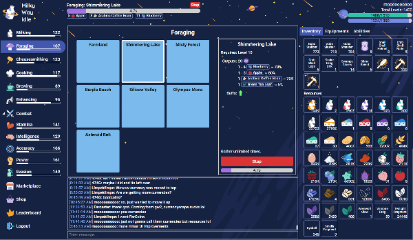
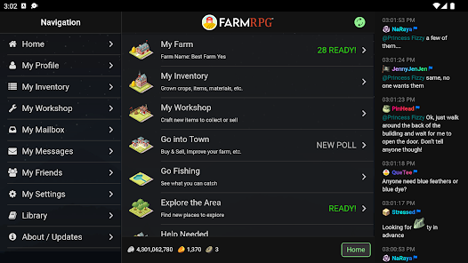
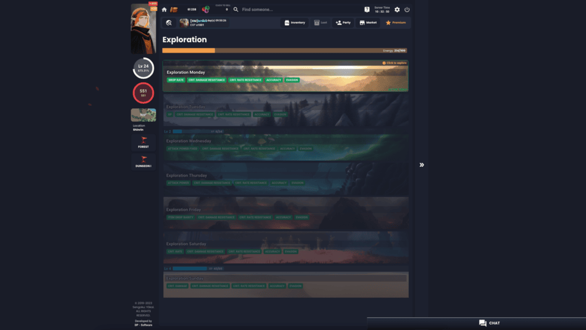
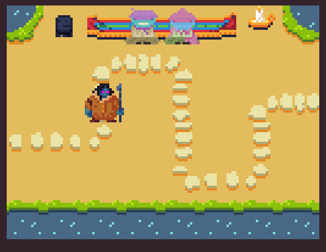

Less popular genres
While most PBBGs are either text-based or virtual pet sites, there are also some other genres of them out there. MMORPGs are common, though those not text-based are somewhat more rare. There are several idle games and some more unique PBBGs available as well.
Here are some the best:
Milky Way Idle
Active since: 2023
Milky Way Idle is a unique multiplayer idle RPG inspired by Runescape skilling and combat. It has a variety of interdependent gathering and crafting skills as well as a flexible combat system against alien monsters. It has a thriving community with player-driven marketplace, in-game chat, guilds, leaderboard, and more! The game is designed to minimize active clicking, meaning you only need to choose an action for your character and it will automatically repeat until you select a different one. You can even queue multiple actions to be performed in sequence.
Farm RPG
Active since: 2021
Farm RPG is a simple, mobile-friendly farming role playing game / MMO. As you play, a lot of fun things unlock for you to do on a daily basis. There's a world to explore with townsfolk to help and a community of players to work with and trade. Farm RPG is a game about choice and making money. There are many ways to invest and grow your farm to increase your profits. The community loves to help players in terms of how to play, best things to do first, and more.
Sengoku Yokai
Active since: 2023
Innovative RPG that takes inspiration from Japanese folklore and mythology, allowing players to choose their class from a variety of Yokai creatures with unique abilities. This game rewards active players, because there is no really any content that you can do while afk. It has a real time combat, where you can even party up with you friends and do the dungeons together. No energy, some cooldowns and limits here and there, but besides that, you can enjoy the game all day. Progression in Sengoku: Yōkai is a bit different than other PBBGs in that it's primarily focused on reincarnations, gearing up and leveling up you skills that you have inherited by making a pack with a Yokai. A LOT of customization.
Mykria
Active since: 2023
Mykria is an esoteric online deck-building RPG focused on exploration and science-fantasy storytelling where the world is destroyed every 8 days, birthing a new experience every time. Delve into the depths of the unknown in this unique science-fantasy setting full of strange characters and secrets to unravel. Battle foes together with simple, real-time card-based combat, trade in rare and valuable goods, collect equipment procedurally-generated and customizable to fit your very own build, and reveal a story that has not yet been told.